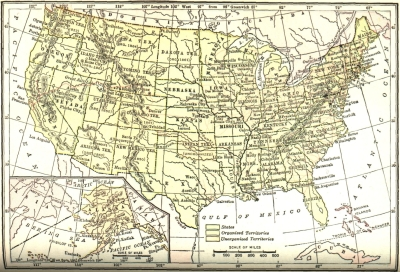
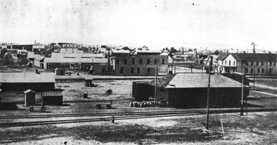
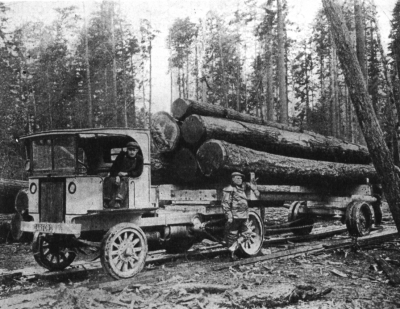
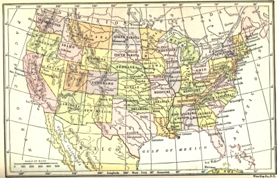
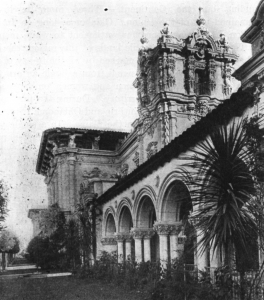
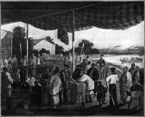

THE DEVELOPMENT OF THE GREAT WEST
At the close of the Civil War, Kansas and Texas were sentinel states on the middle border. Beyond the Rockies, California, Oregon, and Nevada stood guard, the last of them having been just admitted to furnish another vote for the fifteenth amendment abolishing slavery. Between the near and far frontiers lay a vast reach of plain, desert, plateau, and mountain, almost wholly undeveloped. A broad domain, extending from Canada to Mexico, and embracing the regions now included in Washington, Idaho, Wyoming, Montana, Utah, Arizona, New Mexico, the Dakotas, and Oklahoma, had fewer than half a million inhabitants. It was laid out into territories, each administered under a governor appointed by the President and Senate and, as soon as there was the requisite number of inhabitants, a legislature elected by the voters. No railway line stretched across the desert. St. Joseph on the Missouri was the terminus of the Eastern lines. It required twenty-five days for a passenger to make the overland journey to California by the stagecoach system, established in 1858, and more than ten days for the swift pony express, organized in 1860, to carry a letter to San Francisco. Indians still roamed the plain and desert and more than one powerful tribe disputed the white man's title to the soil.
The Railways As Trail Blazers
Opening Railways to the Pacific. —A decade before the Civil War the importance of rail connection between the East and the Pacific Coast had been recognized. Pressure had already been brought to bear on Congress to authorize the construction of a line and to grant land and money in its aid. Both the Democrats and Republicans approved the idea, but it was involved in the slavery controversy. Indeed it was submerged in it. Southern statesmen wanted connections between the Gulf and the Pacific through Texas, while Northerners stood out for a central route.
The North had its way during the war. Congress, by legislation initiated in 1862, provided for the immediate organization of companies to build a line from the Missouri River to California and made grants of land and loans of money to aid in the enterprise. The Western end, the Central Pacific, was laid out under the supervision of Leland Stanford. It was heavily financed by the Mormons of Utah and also by the state government, the ranchmen, miners, and business men of California; and it was built principally by Chinese labor. The Eastern end, the Union Pacific, starting at Omaha, was constructed mainly by veterans of the Civil War and immigrants from Ireland and Germany. In 1869 the two companies met near Ogden in Utah and the driving of the last spike, uniting the Atlantic and the Pacific, was the occasion of a great demonstration.
Other lines to the Pacific were projected at the same time; but the panic of 1873 checked railway enterprise for a while. With the revival of prosperity at the end of that decade, construction was renewed with vigor and the year 1883 marked a series of railway triumphs. In February trains were running from New Orleans through Houston, San Antonio, and Yuma to San Francisco, as a result of a union of the Texas Pacific with the Southern Pacific and its subsidiary corporations. In September the last spike was driven in the Northern Pacific at Helena, Montana. Lake Superior was connected with Puget Sound. The

waters explored by Joliet and Marquette were joined to the waters plowed by Sir Francis Drake while he was searching for a route around the world. That same year also a third line was opened to the Pacific by way of the Atchison, Topeka and Santa Fé, making connections through Albuquerque and Needles with San Francisco. The fondest hopes of railway promoters seemed to be realized.
United States in 1870
Western Railways Precede Settlement. —In the Old World and on our Atlantic seaboard, railways followed population and markets. In the Far West, railways usually preceded the people. Railway builders planned cities on paper before they laid tracks connecting them. They sent missionaries to spread the gospel of "Western opportunity" to people in the Middle West, in the Eastern cities, and in Southern states.
Then they carried their enthusiastic converts bag and baggage in long trains to the distant Dakotas and still farther afield. So the development of the Far West was not left to the tedious processes of time. It was pushed by men of imagination—adventurers who made a romance of money-making and who had dreams of empire unequaled by many kings of the past.
These empire builders bought railway lands in huge tracts; they got more from the government; they overcame every obstacle of cañon, mountain, and stream with the aid of science; they built cities according to the plans made by the engineers. Having the towns ready and railway and steamboat connections formed with the rest of the world, they carried out the people to use the railways, the steamships, the houses, and the land. It was in this way that "the frontier speculator paved the way for the frontier agriculturalist who had to be near a market before he could farm." The spirit of this imaginative enterprise, which laid out railways and towns in advance of the people, is seen in an advertisement of that day: "This extension will run 42 miles from York, northeast through the Island Lake country, and will have five good North Dakota towns. The stations on the line will be well equipped with elevators and will be constructed and ready for operation at the commencement of the grain season. Prospective merchants have been active in securing desirable locations at the different towns on the line. There are still opportunities for hotels, general merchandise, hardware, furniture, and drug stores, etc."

Copyright by Underwood and Underwood, N.Y.
A Town on the Prairie
Among the railway promoters and builders in the West, James J. Hill, of the Great Northern and allied lines, was one of the most forceful figures. He knew that tracks and trains were useless without passengers and freight; without a population of farmers and town dwellers. He therefore organized publicity in the Virginias, Iowa, Ohio, Indiana, Illinois, Wisconsin, and Nebraska especially. He sent out agents to tell the story of Western opportunity in this vein: "You see your children come out of school with no chance to get farms of their own because the cost of land in your older part of the country is so high that you can't afford to buy land to start your sons out in life around you. They have to go to the cities to make a living or become laborers in the mills or hire out as farm hands. There is no future for them there. If you are doing well where you are and can safeguard the future of your children and see them prosper around you, don't leave here. But if you want independence, if you are renting your land, if the money-lender is carrying you along and you are running behind year after year, you can do no worse by moving.... You farmers talk of free trade and protection and what this or that political party will do for you. Why don't you vote a homestead for yourself? That is the only thing Uncle Sam will ever give you. Jim Hill hasn't an acre of land to sell you. We are not in the real estate business. We don't want you to go out West and make a failure of it because the rates at which we haul you and your goods make the first transaction a loss.... We must have landless men for a manless land."
Unlike steamship companies stimulating immigration to get the fares, Hill was seeking permanent settlers who would produce, manufacture, and use the railways as the means of exchange. Consequently he fixed low rates and let his passengers take a good deal of live stock and household furniture free. By doing this he made an appeal that was answered by eager families. In 1894 the vanguard of home seekers left Indiana in fourteen passenger coaches, filled with men, women, and children, and forty-eight freight cars carrying their household goods and live stock. In the ten years that followed, 100,000 people from the Middle West and the South, responding to his call, went to the Western country where they brought eight million acres of prairie land under cultivation.
When Hill got his people on the land, he took an interest in everything that increased the productivity of their labor. Was the output of food for his freight cars limited by bad drainage on the farms? Hill then interested himself in practical ways of ditching and tiling. Were farmers hampered in hauling their goods to his trains by bad roads? In that case, he urged upon the states the improvement of highways. Did the traffic slacken because the food shipped was not of the best quality? Then live stock must be improved and scientific farming promoted. Did the farmers need credit? Banks must be established close at hand to advance it. In all conferences on scientific farm management, conservation of natural resources, banking and credit in relation to agriculture and industry, Hill was an active participant. His was the long vision, seeing in conservation and permanent improvements the foundation of prosperity for the railways and the people.
Indeed, he neglected no opportunity to increase the traffic on the lines. He wanted no empty cars running in either direction and no wheat stored in warehouses for the lack of markets. So he looked to the Orient as well as to Europe as an outlet for the surplus of the farms. He sent agents to China and Japan to discover what American goods and produce those countries would consume and what manufactures they had to offer to Americans in exchange. To open the Pacific trade he bought two ocean monsters, the Minnesota and the Dakota, thus preparing for emergencies West as well as East. When some Japanese came to the United States on their way to Europe to buy steel rails, Hill showed them how easy it was for them to make their purchase in this country and ship by way of American railways and American vessels. So the railway builder and promoter, who helped to break the virgin soil of the prairies, lived through the pioneer epoch and into the age of great finance. Before he died he saw the wheat fields of North Dakota linked with the spinning jennies of Manchester and the docks of Yokohama.
The Evolution of Grazing and Agriculture
The Removal of the Indians. —Unlike the frontier of New England in colonial days or that of Kentucky later, the advancing lines of home builders in the Far West had little difficulty with warlike natives. Indian attacks were made on the railway construction gangs; General Custer had his fatal battle with the Sioux in 1876 and there were minor brushes; but they were all of relatively slight consequence. The former practice of treating with the Indians as independent nations was abandoned in 1871 and most of them were concentrated in reservations where they were mainly supported by the government. The supervision of their affairs was vested in a board of commissioners created in 1869 and instructed to treat them as wards of the nation—a trust which unfortunately was often betrayed. A further step in Indian policy was taken in 1887 when provision was made for issuing lands to individual Indians, thus permitting them to become citizens and settle down among their white neighbors as farmers or cattle raisers. The disappearance of the buffalo, the main food supply of the wild Indians, had made them more tractable and more willing to surrender the freedom of the hunter for the routine of the reservation, ranch, or wheat field.
The Cowboy and Cattle Ranger. —Between the frontier of farms and the mountains were plains and semi-arid regions in vast reaches suitable for grazing. As soon as the railways were open into the Missouri Valley, affording an outlet for stock, there sprang up to the westward cattle and sheep raising on an immense scale. The far-famed American cowboy was the hero in this scene. Great herds of cattle were bred in Texas; with the advancing spring and summer seasons, they were driven northward across the plains and over the buffalo trails. In a single year, 1884, it is estimated that nearly one million head of cattle were moved out of Texas to the North by four thousand cowboys, supplied with 30,000 horses and ponies.
During the two decades from 1870 to 1890 both the cattle men and the sheep raisers had an almost free run of the plains, using public lands without paying for the privilege and waging war on one another over the possession of ranges. At length, however, both had to go, as the homesteaders and land companies came and fenced in the plain and desert with endless lines of barbed wire. Already in 1893 a writer familiar with the frontier lamented the passing of the picturesque days: "The unique position of the cowboys among the Americans is jeopardized in a thousand ways. Towns are growing up on their pasture lands; irrigation schemes of a dozen sorts threaten to turn bunch-grass scenery into farm-land views; farmers are pre-empting valleys and the sides of waterways; and the day is not far distant when stock-raising must be done mainly in small herds, with winter corrals, and then the cowboy's days will end. Even now his condition disappoints those who knew him only half a dozen years ago. His breed seems to have deteriorated and his ranks are filling with men who work for wages rather than for the love of the free life and bold companionship that once tempted men into that calling. Splendid Cheyenne saddles are less and less numerous in the outfits; the distinctive hat that made its way up from Mexico may or may not be worn; all the civil authorities in nearly all towns in the grazing country forbid the wearing of side arms; nobody shoots up these towns any more. The fact is the old simon-pure cowboy days are gone already."
Settlement under the Homestead Act of 1862. —Two factors gave a special stimulus to the rapid settlement of Western lands which swept away the Indians and the cattle rangers. The first was the policy of the railway companies in selling large blocks of land received from the government at low prices to induce immigration. The second was the operation of the Homestead law passed in 1862. This measure practically closed the long controversy over the disposition of the public domain that was suitable for agriculture. It provided for granting, without any cost save a small registration fee, public lands in lots of 160 acres each to citizens and aliens who declared their intention of becoming citizens. The one important condition attached was that the settler should occupy the farm for five years before his title was finally confirmed. Even this stipulation was waived in the case of the Civil War veterans who were allowed to count their term of military service as a part of the five years' occupancy required. As the soldiers of the Revolutionary and Mexican wars had advanced in great numbers to the frontier in earlier days, so now veterans led in the settlement of the middle border. Along with them went thousands of German, Irish, and Scandinavian immigrants, fresh from the Old World. Between 1867 and 1874, 27,000,000 acres were staked out in quarter-section farms. In twenty years (1860-80), the population of Nebraska leaped from 28,000 to almost half a million; Kansas from 100,000 to a million; Iowa from 600,000 to 1,600,000; and the Dakotas from 5000 to 140,000.
The Diversity of Western Agriculture. —In soil, produce, and management, Western agriculture presented many contrasts to that of the East and South. In the region of arable and watered lands the typical American unit—the small farm tilled by the owner—appeared as usual; but by the side of it many a huge domain owned by foreign or Eastern companies and tilled by hired labor. Sometimes the great estate took the shape of the "bonanza farm" devoted mainly to wheat and corn and cultivated on a large scale by machinery. Again it assumed the form of the cattle ranch embracing tens of thousands of acres. Again it was a vast holding of diversified interest, such as the Santa Anita ranch near Los Angeles, a domain of 60,000 acres "cultivated in a glorious sweep of vineyards and orange and olive orchards, rich sheep and cattle pastures and horse ranches, their life and customs handed down from the Spanish owners of the various ranches which were swept into one estate."
Irrigation. —In one respect agriculture in the Far West was unique. In a large area spreading through eight states, Montana, Idaho, Wyoming, Utah, Colorado, Nevada, Arizona, New Mexico, and parts of adjoining states, the rainfall was so slight that the ordinary crops to which the American farmer was accustomed could not be grown at all. The Mormons were the first Anglo-Saxons to encounter aridity, and they were baffled at first; but they studied it and mastered it by magnificent irrigation systems. As other settlers poured into the West the problem of the desert was attacked with a will, some of them replying to the commiseration of Eastern farmers by saying that it was easier to scoop out an irrigation ditch than to cut forests and wrestle with stumps and stones. Private companies bought immense areas at low prices, built irrigation works, and disposed of their lands in small plots. Some ranchers with an instinct for water, like that of the miner for metal, sank wells into the dry sand and were rewarded with gushers that "soused the thirsty desert and turned its good-for-nothing sand into good-for-anything loam." The federal government came to the aid of the arid regions in 1894 by granting lands to the states to be used for irrigation purposes.
In this work Wyoming took the lead with a law which induced capitalists to invest in irrigation and at the same time provided for the sale of the redeemed lands to actual settlers. Finally in 1902 the federal government by its liberal Reclamation Act added its strength to that of individuals, companies, and states in conquering "arid America."
"Nowhere," writes Powell, a historian of the West, in his picturesque End of the Trail, "has the white man fought a more courageous fight or won a more brilliant victory than in Arizona. His weapons have been the transit and the level, the drill and the dredge, the pick and the spade; and the enemy which he has conquered has been the most stubborn of all foes—the hostile forces of Nature.... The story of how the white man within the space of less than thirty years penetrated, explored, and mapped this almost unknown region; of how he carried law, order, and justice into a section which had never had so much as a
speaking acquaintance with any one of the three before; of how, realizing the necessity for means of communication, he built highways of steel across this territory from east to west and from north to south; of how, undismayed by the savageness of the countenance which the desert turned upon him, he laughed and rolled up his sleeves, and spat upon his hands, and slashed the face of the desert with canals and irrigating ditches, and filled those ditches with water brought from deep in the earth or high in the mountains; and of how, in the conquered and submissive soil, he replaced the aloe with alfalfa, the mesquite with maize, the cactus with cotton, forms one of the most inspiring chapters in our history. It is one of the epics of civilization, this reclamation of the Southwest, and its heroes, thank God, are Americans.
"Other desert regions have been redeemed by irrigation—Egypt, for example, and Mesopotamia and parts of the Sudan—but the people of all those regions lay stretched out in the shade of a convenient palm, metaphorically speaking, and waited for some one with more energy than themselves to come along and do the work. But the Arizonians, mindful of the fact that God, the government, and Carnegie help those who help themselves, spent their days wielding the pick and shovel, and their evenings in writing letters to Washington with toil-hardened hands. After a time the government was prodded into action and the great dams at Laguna and Roosevelt are the result. Then the people, organizing themselves into coöperative leagues and water-users' associations, took up the work of reclamation where the government left off; it is to these energetic, persevering men who have drilled wells, plowed fields, and dug ditches through the length and breadth of that great region which stretches from Yuma to Tucson, that the metamorphosis of Arizona is due."
The effect of irrigation wherever introduced was amazing. Stretches of sand and sagebrush gave way to fertile fields bearing crops of wheat, corn, fruits, vegetables, and grass. Huge ranches grazed by browsing sheep were broken up into small plots. The cowboy and ranchman vanished. In their place rose the prosperous community—a community unlike the township of Iowa or the industrial center of the East. Its intensive tillage left little room for hired labor. Its small holdings drew families together in village life rather than dispersing them on the lonely plain. Often the development of water power in connection with irrigation afforded electricity for labor-saving devices and lifted many a burden that in other days fell heavily upon the shoulders of the farmer and his family.
Mining and Manufacturing in the West
Mineral Resources. —In another important particular the Far West differed from the Mississippi Valley states. That was in the predominance of mining over agriculture throughout a vast section. Indeed it was the minerals rather than the land that attracted the pioneers who first opened the country. The discovery of gold in California in 1848 was the signal for the great rush of prospectors, miners, and promoters who explored the valleys, climbed the hills, washed the sands, and dug up the soil in their feverish search for gold, silver, copper, coal, and other minerals. In Nevada and Montana the development of mineral resources went on all during the Civil War. Alder Gulch became Virginia City in 1863; Last Chance Gulch was named Helena in 1864; and Confederate Gulch was christened Diamond City in 1865. At Butte the miners began operations in 1864 and within five years had washed out eight million dollars' worth of gold.
Under the gold they found silver; under silver they found copper.
Even at the end of the nineteenth century, after agriculture was well advanced and stock and sheep raising introduced on a large scale, minerals continued to be the chief source of wealth in a number of states. This was revealed by the figures for 1910. The gold, silver, iron, and copper of Colorado were worth more than the wheat, corn, and oats combined; the copper of Montana sold for more than all the cereals and four times the price of the wheat. The interest of Nevada was also mainly mining, the receipts from the mineral output being $43,000,000 or more than one-half the national debt of Hamilton's day. The yield of the mines of Utah was worth four or five times the wheat crop; the coal of Wyoming brought twice as much as

the great wool clip; the minerals of Arizona were totaled at $43,000,000 as against a wool clip reckoned at $1,200,000; while in Idaho alone of this group of states did the wheat crop exceed in value the output of the mines.
Copyright by Underwood and Underwood, N.Y.
Logging
Timber Resources. —The forests of the great West, unlike those of the Ohio Valley, proved a boon to the pioneers rather than a foe to be attacked. In Ohio and Indiana, for example, the frontier line of homemakers had to cut, roll, and burn thousands of trees before they could put out a crop of any size.
Beyond the Mississippi, however, there were all ready for the breaking plow great reaches of almost treeless prairie, where every stick of timber was precious. In the other parts, often rough and mountainous, where stood primeval forests of the finest woods, the railroads made good use of the timber. They consumed acres of forests themselves in making ties, bridge timbers, and telegraph poles, and they laid a heavy tribute upon the forests for their annual upkeep. The surplus trees, such as had burdened the pioneers of the Northwest Territory a hundred years before, they carried off to markets on the east and west coasts.
Western Industries. —The peculiar conditions of the Far West stimulated a rise of industries more rapid than is usual in new country. The mining activities which in many sections preceded agriculture called for sawmills to furnish timber for the mines and smelters to reduce and refine ores. The ranches supplied sheep and cattle for the packing houses of Kansas City as well as Chicago. The waters of the Northwest afforded salmon for 4000 cases in 1866 and for 1,400,000 cases in 1916. The fruits and vegetables of California brought into existence innumerable canneries. The lumber industry, starting with crude sawmills to furnish rough timbers for railways and mines, ended in specialized factories for paper, boxes, and furniture. As the railways preceded settlement and furnished a ready outlet for local manufactures, so they encouraged the early establishment of varied industries, thus creating a state of affairs quite unlike that which obtained in the Ohio Valley in the early days before the opening of the Erie Canal.
Social Effects of Economic Activities. —In many respects the social life of the Far West also differed from that of the Ohio Valley. The treeless prairies, though open to homesteads, favored the great estate tilled in part by tenant labor and in part by migratory seasonal labor, summoned from all sections of the country for the harvests. The mineral resources created hundreds of huge fortunes which made the
accumulations of eastern mercantile families look trivial by comparison. Other millionaires won their fortunes in the railway business and still more from the cattle and sheep ranges. In many sections the
"cattle king," as he was called, was as dominant as the planter had been in the old South. Everywhere in the grazing country he was a conspicuous and important person. He "sometimes invested money in banks, in railroad stocks, or in city property.... He had his rating in the commercial reviews and could hobnob with bankers, railroad presidents, and metropolitan merchants.... He attended party caucuses and conventions, ran for the state legislature, and sometimes defeated a lawyer or metropolitan 'business man'
in the race for a seat in Congress. In proportion to their numbers, the ranchers ... have constituted a highly impressive class."
Although many of the early capitalists of the great West, especially from Nevada, spent their money principally in the East, others took leadership in promoting the sections in which they had made their fortunes. A railroad pioneer, General Palmer, built his home at Colorado Springs, founded the town, and encouraged local improvements. Denver owed its first impressive buildings to the civic patriotism of Horace Tabor, a wealthy mine owner. Leland Stanford paid his tribute to California in the endowment of a large university. Colonel W.F. Cody, better known as "Buffalo Bill," started his career by building a
"boom town" which collapsed, and made a large sum of money supplying buffalo meat to construction hands (hence his popular name). By his famous Wild West Show, he increased it to a fortune which he devoted mainly to the promotion of a western reclamation scheme.
While the Far West was developing this vigorous, aggressive leadership in business, a considerable industrial population was springing up. Even the cattle ranges and hundreds of farms were conducted like factories in that they were managed through overseers who hired plowmen, harvesters, and cattlemen at regular wages. At the same time there appeared other peculiar features which made a lasting impression on western economic life. Mining, lumbering, and fruit growing, for instance, employed thousands of workers during the rush months and turned them out at other times. The inevitable result was an army of migratory laborers wandering from camp to camp, from town to town, and from ranch to ranch, without fixed homes or established habits of life. From this extraordinary condition there issued many a long and lawless conflict between capital and labor, giving a distinct color to the labor movement in whole sections of the mountain and coast states.
The Admission of New States
The Spirit of Self-Government. —The instinct of self-government was strong in the western communities. In the very beginning, it led to the organization of volunteer committees, known as
"vigilantes," to suppress crime and punish criminals. As soon as enough people were settled permanently in a region, they took care to form a more stable kind of government. An illustration of this process is found in the Oregon compact made by the pioneers in 1843, the spirit of which is reflected in an editorial in an old copy of the Rocky Mountain News: "We claim that any body or community of American citizens which from any cause or under any circumstances is cut off from or from isolation is so situated as not to be under any active and protecting branch of the central government, have a right, if on American soil, to frame a government and enact such laws and regulations as may be necessary for their own safety, protection, and happiness, always with the condition precedent, that they shall, at the earliest moment when the central government shall extend an effective organization and laws over them, give it their unqualified support and obedience."
People who turned so naturally to the organization of local administration were equally eager for admission to the union as soon as any shadow of a claim to statehood could be advanced. As long as a region was merely one of the territories of the United States, the appointment of the governor and other officers was controlled by politics at Washington. Moreover the disposition of land, mineral rights, forests, and water power was also in the hands of national leaders. Thus practical considerations were united with
the spirit of independence in the quest for local autonomy.
Nebraska and Colorado. —Two states, Nebraska and Colorado, had little difficulty in securing admission to the union. The first, Nebraska, had been organized as a territory by the famous Kansas-Nebraska bill which did so much to precipitate the Civil War. Lying to the north of Kansas, which had been admitted in 1861, it escaped the invasion of slave owners from Missouri and was settled mainly by farmers from the North. Though it claimed a population of only 67,000, it was regarded with kindly interest by the Republican Congress at Washington and, reduced to its present boundaries, it received the coveted statehood in 1867.
This was hardly accomplished before the people of Colorado to the southwest began to make known their demands. They had been organized under territorial government in 1861 when they numbered only a handful; but within ten years the aspect of their affairs had completely changed. The silver and gold deposits of the Leadville and Cripple Creek regions had attracted an army of miners and prospectors. The city of Denver, founded in 1858 and named after the governor of Kansas whence came many of the early settlers, had grown from a straggling camp of log huts into a prosperous center of trade. By 1875 it was reckoned that the population of the territory was not less than one hundred thousand; the following year Congress, yielding to the popular appeal, made Colorado a member of the American union.
Six New States (1889-1890). —For many years there was a deadlock in Congress over the admission of new states. The spell was broken in 1889 under the leadership of the Dakotas. For a long time the Dakota territory, organized in 1861, had been looked upon as the home of the powerful Sioux Indians whose enormous reservation blocked the advance of the frontier. The discovery of gold in the Black Hills, however, marked their doom. Even before Congress could open their lands to prospectors, pioneers were swarming over the country. Farmers from the adjoining Minnesota and the Eastern states, Scandinavians, Germans, and Canadians, came in swelling waves to occupy the fertile Dakota lands, now famous even as far away as the fjords of Norway. Seldom had the plow of man cut through richer soil than was found in the bottoms of the Red River Valley, and it became all the more precious when the opening of the Northern Pacific in 1883 afforded a means of transportation east and west. The population, which had numbered 135,000 in 1880, passed the half million mark before ten years had elapsed.
Remembering that Nebraska had been admitted with only 67,000 inhabitants, the Dakotans could not see why they should be kept under federal tutelage. At the same time Washington, far away on the Pacific Coast, Montana, Idaho, and Wyoming, boasting of their populations and their riches, put in their own eloquent pleas. But the members of Congress were busy with politics. The Democrats saw no good reason for admitting new Republican states until after their defeat in 1888. Near the end of their term the next year they opened the door for North and South Dakota, Washington, and Montana. In 1890, a Republican Congress brought Idaho and Wyoming into the union, the latter with woman suffrage, which had been granted twenty-one years before.
Utah. —Although Utah had long presented all the elements of a well-settled and industrious community, its admission to the union was delayed on account of popular hostility to the practice of polygamy. The custom, it is true, had been prohibited by act of Congress in 1862; but the law had been systematically evaded. In 1882 Congress made another and more effective effort to stamp out polygamy. Five years later it even went so far as to authorize the confiscation of the property of the Mormon Church in case the practice of plural marriages was not stopped. Meanwhile the Gentile or non-Mormon population was steadily increasing and the leaders in the Church became convinced that the battle against the sentiment of the country was futile. At last in 1896 Utah was admitted as a state under a constitution which forbade plural marriages absolutely and forever. Horace Greeley, who visited Utah in 1859, had prophesied that the Pacific Railroad would work a revolution in the land of Brigham Young. His prophecy had come true.

The United States in 1912
Rounding out the Continent. —Three more territories now remained out of the Union. Oklahoma, long an Indian reservation, had been opened for settlement to white men in 1889. The rush upon the fertile lands of this region, the last in the history of America, was marked by all the frenzy of the final, desperate chance. At a signal from a bugle an army of men with families in wagons, men and women on horseback and on foot, burst into the territory. During the first night a city of tents was raised at Guthrie and Oklahoma City. In ten days wooden houses rose on the plains. In a single year there were schools, churches, business blocks, and newspapers. Within fifteen years there was a population of more than half a million. To the west, Arizona with a population of about 125,000 and New Mexico with 200,000
inhabitants joined Oklahoma in asking for statehood. Congress, then Republican, looked with reluctance upon the addition of more Democratic states; but in 1907 it was literally compelled by public sentiment and a sense of justice to admit Oklahoma. In 1910 the House of Representatives went to the Democrats and within two years Arizona and New Mexico were "under the roof." So the continental domain was rounded out.
The Influence of the Far West on National Life
The Last of the Frontier. —When Horace Greeley made his trip west in 1859 he thus recorded the progress of civilization in his journal:
"May 12th, Chicago.—Chocolate and morning journals last seen on the hotel breakfast table.
23rd, Leavenworth (Kansas).—Room bells and bath tubs make their final appearance.
26th, Manhattan.—Potatoes and eggs last recognized among the blessings that 'brighten as they take their flight.'
27th, Junction City.—Last visitation of a boot-black, with dissolving views of a board bedroom. Beds bid us good-by."

Copyright by Panama-California Exposition
The Canadian Building at the Panama-California International Exposition, San Diego, 1915
Within thirty years travelers were riding across that country in Pullman cars and enjoying at the hotels all the comforts of a standardized civilization. The "wild west" was gone, and with it that frontier of pioneers and settlers who had long given such a bent and tone to American life and had "poured in upon the floor of Congress" such a long line of "backwoods politicians," as they were scornfully styled.
Free Land and Eastern Labor. —It was not only the picturesque features of the frontier that were gone.
Of far more consequence was the disappearance of free lands with all that meant for American labor. For more than a hundred years, any man of even moderate means had been able to secure a homestead of his own and an independent livelihood. For a hundred years America had been able to supply farms to as many immigrants as cared to till the soil. Every new pair of strong arms meant more farms and more wealth. Workmen in Eastern factories, mines, or mills who did not like their hours, wages, or conditions of labor, could readily find an outlet to the land. Now all that was over. By about 1890 most of the desirable land available under the Homestead act had disappeared. American industrial workers confronted a new situation.
Grain Supplants King Cotton. —In the meantime a revolution was taking place in agriculture. Until 1860
the chief staples sold by America were cotton and tobacco. With the advance of the frontier, corn and wheat supplanted them both in agrarian economy. The West became the granary of the East and of Western Europe. The scoop shovel once used to handle grain was superseded by the towering elevator, loading and unloading thousands of bushels every hour. The refrigerator car and ship made the packing industry as stable as the production of cotton or corn, and gave an immense impetus to cattle raising and sheep farming. So the meat of the West took its place on the English dinner table by the side of bread baked from Dakotan wheat.
Aid in American Economic Independence. —The effects of this economic movement were manifold and striking. Billions of dollars' worth of American grain, dairy produce, and meat were poured into European markets where they paid off debts due money lenders and acquired capital to develop American resources.
Thus they accelerated the progress of American financiers toward national independence. The country, which had timidly turned to the Old World for capital in Hamilton's day and had borrowed at high rates of interest in London in Lincoln's day, moved swiftly toward the time when it would be among the world's first bankers and money lenders itself. Every grain of wheat and corn pulled the balance down on the
Eastern Agriculture Affected. —In the East as well as abroad the opening of the western granary produced momentous results. The agricultural economy of that part of the country was changed in many respects. Whole sections of the poorest land went almost out of cultivation, the abandoned farms of the New England hills bearing solemn witness to the competing power of western wheat fields. Sheep and cattle raising, as well as wheat and corn production, suffered at least a relative decline. Thousands of farmers cultivating land of the lower grade were forced to go West or were driven to the margin of subsistence. Even the herds that supplied Eastern cities with milk were fed upon grain brought halfway across the continent.
The Expansion of the American Market. —Upon industry as well as agriculture, the opening of vast food-producing regions told in a thousand ways. The demand for farm machinery, clothing, boots, shoes, and other manufactures gave to American industries such a market as even Hamilton had never foreseen.
Moreover it helped to expand far into the Mississippi Valley the industrial area once confined to the Northern seaboard states and to transform the region of the Great Lakes into an industrial empire. Herein lies the explanation of the growth of mid-western cities after 1865. Chicago, with its thirty-five railways, tapped every locality of the West and South. To the railways were added the water routes of the Lakes, thus creating a strategic center for industries. Long foresight carried the McCormick reaper works to Chicago before 1860. From Troy, New York, went a large stove plant. That was followed by a shoe factory from Massachusetts. The packing industry rose as a matter of course at a point so advantageous for cattle raisers and shippers and so well connected with Eastern markets.
To the opening of the Far West also the Lake region was indebted for a large part of that water-borne traffic which made it "the Mediterranean basin of North America." The produce of the West and the manufactures of the East poured through it in an endless stream. The swift growth of shipbuilding on the Great Lakes helped to compensate for the decline of the American marine on the high seas. In response to this stimulus Detroit could boast that her shipwrights were able to turn out a ten thousand ton Leviathan for ore or grain about "as quickly as carpenters could put up an eight-room house." Thus in relation to the Far West the old Northwest territory—the wilderness of Jefferson's time—had taken the position formerly occupied by New England alone. It was supplying capital and manufactures for a vast agricultural empire West and South.
America on the Pacific. —It has been said that the Mediterranean Sea was the center of ancient civilization; that modern civilization has developed on the shores of the Atlantic; and that the future belongs to the Pacific. At any rate, the sweep of the United States to the shores of the Pacific quickly exercised a powerful influence on world affairs and it undoubtedly has a still greater significance for the future.
Very early regular traffic sprang up between the Pacific ports and the Hawaiian Islands, China, and Japan.
Two years before the adjustment of the Oregon controversy with England, namely in 1844, the United States had established official and trading relations with China. Ten years later, four years after the admission of California to the union, the barred door of Japan was forced open by Commodore Perry. The commerce which had long before developed between the Pacific ports and Hawaii, China, and Japan now flourished under official care. In 1865 a ship from Honolulu carried sugar, molasses, and fruits from Hawaii to the Oregon port of Astoria. The next year a vessel from Hongkong brought rice, mats, and tea from China. An era of lucrative trade was opened. The annexation of Hawaii in 1898, the addition of the Philippines at the same time, and the participation of American troops in the suppression of the Boxer rebellion in Peking in 1900, were but signs and symbols of American power on the Pacific.

From an old print
Commodore Perry's Men Making Presents to the Japanese
Conservation and the Land Problem. —The disappearance of the frontier also brought new and serious problems to the governments of the states and the nation. The people of the whole United States suddenly were forced to realize that there was a limit to the rich, new land to exploit and to the forests and minerals awaiting the ax and the pick. Then arose in America the questions which had long perplexed the countries of the Old World—the scientific use of the soils and conservation of natural resources. Hitherto the government had followed the easy path of giving away arable land and selling forest and mineral lands at low prices. Now it had to face far more difficult and complex problems. It also had to consider questions of land tenure again, especially if the ideal of a nation of home-owning farmers was to be maintained.
While there was plenty of land for every man or woman who wanted a home on the soil, it made little difference if single landlords or companies got possession of millions of acres, if a hundred men in one western river valley owned 17,000,000 acres; but when the good land for small homesteads was all gone, then was raised the real issue. At the opening of the twentieth century the nation, which a hundred years before had land and natural resources apparently without limit, was compelled to enact law after law conserving its forests and minerals. Then it was that the great state of California, on the very border of the continent, felt constrained to enact a land settlement measure providing government assistance in an effort to break up large holdings into small lots and to make it easy for actual settlers to acquire small farms.
America was passing into a new epoch.
References
Henry Inman, The Old Santa Fé Trail.
R.I. Dodge, The Plains of the Great West (1877).
C.H. Shinn, The Story of the Mine.
Cy Warman, The Story of the Railroad.
Emerson Hough, The Story of the Cowboy.
H.H. Bancroft is the author of many works on the West but his writings will be found only in the larger libraries.
Joseph Schafer, History of the Pacific Northwest (ed. 1918).
T.H. Hittel, History of California (4 vols.).
W.H. Olin, American Irrigation Farming.
W.E. Smythe, The Conquest of Arid America.
H.A. Millis, The American-Japanese Problem.
E.S. Meany, History of the State of Washington.
H.K. Norton, The Story of California.
Questions
1. Name the states west of the Mississippi in 1865.
2. In what manner was the rest of the western region governed?
3. How far had settlement been carried?
4. What were the striking physical features of the West?
5. How was settlement promoted after 1865?
6. Why was admission to the union so eagerly sought?
7. Explain how politics became involved in the creation of new states.
8. Did the West rapidly become like the older sections of the country?
9. What economic peculiarities did it retain or develop?
10. How did the federal government aid in western agriculture?
11. How did the development of the West affect the East? The South?
12. What relation did the opening of the great grain areas of the West bear to the growth of America's commercial and financial power?
13. State some of the new problems of the West.
14. Discuss the significance of American expansion to the Pacific Ocean.
Research Topics
The Passing of the Wild West. —Haworth, The United States in Our Own Times, pp. 100-124.
The Indian Question. —Sparks, National Development (American Nation Series), pp. 265-281.
The Chinese Question. —Sparks, National Development, pp. 229-250; Rhodes, History of the United States, Vol. VIII, pp. 180-196.
The Railway Age. —Schafer, History of the Pacific Northwest, pp. 230-245; E.V. Smalley, The Northern Pacific Railroad; Paxson, The New Nation (Riverside Series), pp. 20-26, especially the map on p. 23, and pp. 142-148.
Agriculture and Business. —Schafer, Pacific Northwest, pp. 246-289.
Ranching in the Northwest. —Theodore Roosevelt, Ranch Life, and Autobiography, pp. 103-143.
The Conquest of the Desert. —W.E. Smythe, The Conquest of Arid America.
Studies of Individual Western States. —Consult any good encyclopedia.